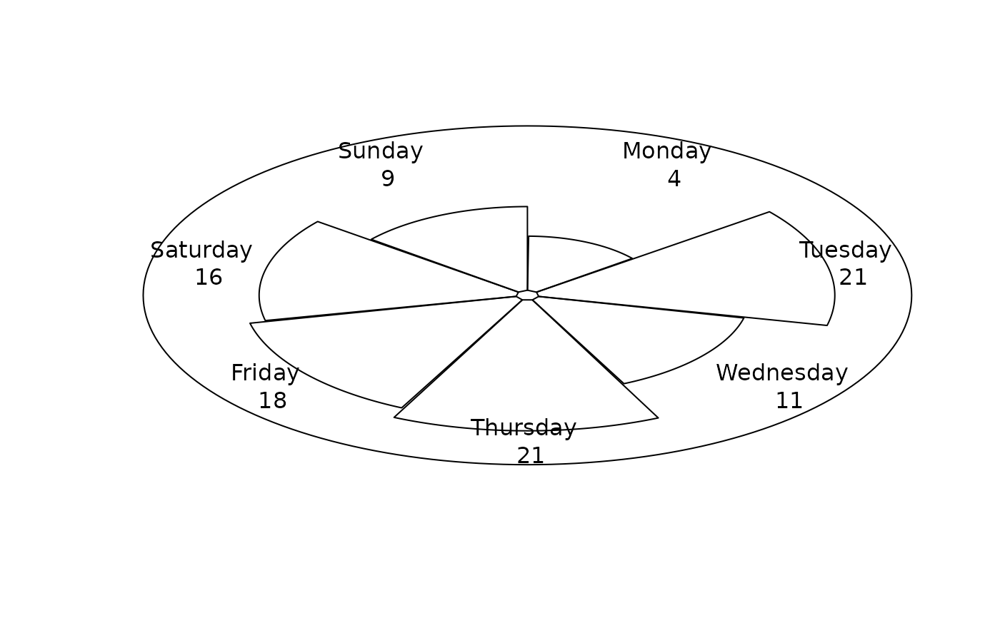
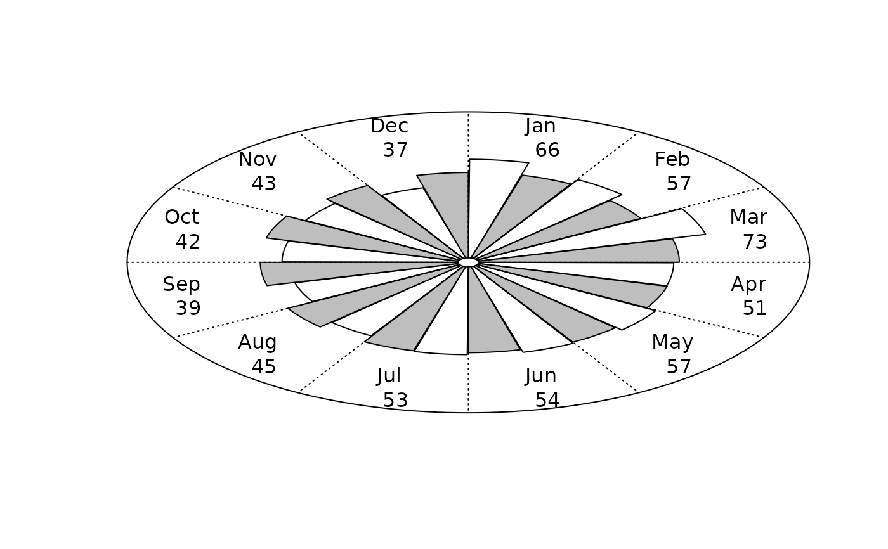
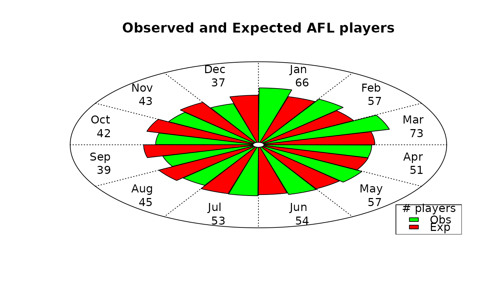
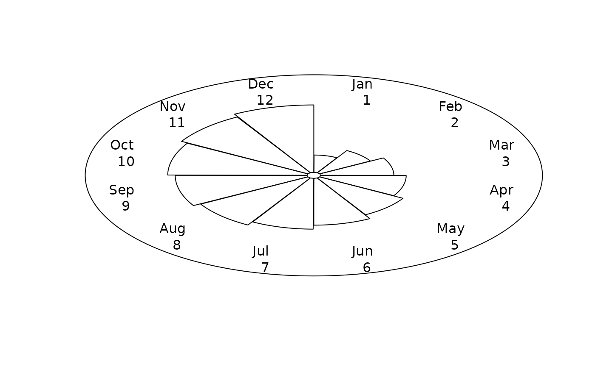

A circular plot useful for visualising monthly or weekly data.
Usage
plotCircular(
area1,
area2 = NULL,
spokes = NULL,
scale = 0.8,
labels,
stats = TRUE,
dp = 1,
clockwise = TRUE,
spoke.col = "black",
lines = FALSE,
centrecirc = 0.03,
main = "",
xlab = "",
ylab = "",
pieces.col = c("white", "gray"),
length = FALSE,
legend = TRUE,
auto.legend = list(x = "bottomright", fill = NULL, labels = NULL, title = ""),
...
)Arguments
- area1
variable to plot, the area of the segments (or petals) are proportional to this variable.
- area2
2nd variable to plot (optional), the area of the segments are plotted in grey.
- spokes
spokes that overlay segments, for example standard errors (optional).
- scale
scale the overall size of the segments (default:0.8).
- labels
optional labels to appear at the ends of the segments (there should be as many labels as there are
area1).- stats
put area values at the ends of the segments, default:TRUE.
- dp
decimal places for statistics, default=1.
- clockwise
plot in a clockwise direction, default:TRUE.
- spoke.col
spoke colour, default:black.
- lines
add dotted lines to separate petals, default:FALSE.
- centrecirc
controls the size of the circle at the centre of the plot, default:0.03.
- main
title for plot, default:blank
- xlab
x axis label, default:blank
- ylab
y axis label, default:blank
- pieces.col
colours for circular pieces, default:"white" for 1st and "grey" for second variable. Note that a list of available colours may be found with
colours().- length
make the length of the segments proportional to the dependent variable, default:FALSE
- legend
whether to include legend or not, default:TRUE when plotting two variables
- auto.legend
list of parameters for legend, see
legend()- ...
additional arguments to
plot()and/orlegend(). Seepar()for more details
Details
A circular plot can be useful for spotting the shape of the seasonal
pattern. This function can be used to plot any circular patterns, e.g.,
weekly or monthly. The number of segments will be the length of the variable
area1.
The plots are also called rose diagrams, with the segments then called "petals".
References
Fisher, N.I. (1993) Statistical Analysis of Circular Data. Cambridge University Press, Cambridge.
Author
Adrian Barnett a.barnett@qut.edu.au
Examples
# \donttest{
weekfreq <- table(round(runif(100, min = 1, max = 7)))
# weeks (random data)
daysoftheweek <- c(
'Monday',
'Tuesday',
'Wednesday',
'Thursday',
'Friday',
'Saturday',
'Sunday'
)
plotCircular(area1 = weekfreq, labels = daysoftheweek, dp = 0)

# Observed number of AFL players with expected values
plotCircular(
area1 = AFL$players,
area2 = AFL$expected,
scale = 0.72,
labels = month.abb,
dp = 0,
lines = TRUE,
legend = FALSE
)

plotCircular(
area1 = AFL$players,
area2 = AFL$expected,
scale = 0.72,
labels = month.abb,
dp = 0,
lines = TRUE,
pieces.col = c("green", "red"),
auto.legend = list(labels = c("Obs", "Exp"), title = "# players"),
main = "Observed and Expected AFL players"
)

# months (dummy data)
plotCircular(
area1 = seq(1, 12, 1),
scale = 0.7,
labels = month.abb,
dp = 0
)

# }